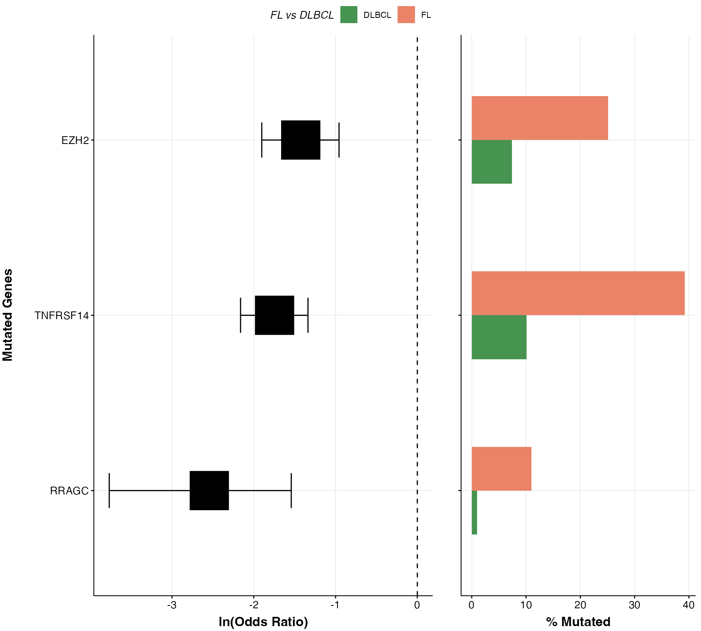

Forest Plot.
prettyForestPlot.RdCreate a forest plot comparing mutation frequencies for a set of genes between two groups.
Usage
prettyForestPlot(
maf,
mutmat,
metadata,
genes,
keepGeneOrder = FALSE,
min_mutations = 1,
comparison_column,
rm_na_samples = FALSE,
comparison_values = FALSE,
separate_hotspots = FALSE,
comparison_name = FALSE,
custom_colours = FALSE,
custom_labels = FALSE,
max_q = 1
)Arguments
- maf
A maf data frame. Minimum required columns are Hugo_Symbol and Tumor_Sample_Barcode.
- mutmat
Optional argument for binary mutation matrix. If not supplied, function will generate this matrix from the file used in argument "maf".
- metadata
Metadata for the comparisons. Minimum required columns are Tumor_Sample_Barcode and the column assigning each case to one of two groups.
- genes
An optional vector of genes to restrict your plot to. If no gene-list is supplied, the function will extract all mutated genes from the incoming maf. See min_mutations parameter for more info.
- keepGeneOrder
Set to TRUE if you want to preserve the gene order specified.
- min_mutations
Optional parameter for when no `genes` is provided. This parameter ensures only genes with n mutations are kept in `genes`. Default value is 1, this means all genes in the incoming maf will be plotted.
- comparison_column
Mandatory: the name of the metadata column containing the comparison values.
- rm_na_samples
Set to TRUE to remove 0 mutation samples. Default is FALSE.
- comparison_values
Optional: If the comparison column contains more than two values or is not a factor, specify a character vector of length two in the order you would like the factor levels to be set, reference group first.
- separate_hotspots
Optional: If you would like to treat hotspots separately from other mutations in any gene. Requires that the maf file is annotated with [GAMBLR::annotate_hotspots].
- comparison_name
Optional: Specify the legend title if different from the comparison column name.
- custom_colours
Optional: Specify a named vector of colours that match the values in the comparison column.
- custom_labels
Optional: Specify custom labels for the legend categories. Must be in the same order as comparison_values.
- max_q
cut off for q values to be filtered in fish test
Value
A convenient list containing all the data frames that were created in making the plot, including the mutation matrix. It also produces (and returns) ggplot object with a side-by-side forest plot and bar plot showing mutation incidences across two groups.
Details
This function returns two types of plot (box plot and forest plot), the user can either view them separately or arranged on the same grob. In addition this function also lets the user control the mutation frequencies of the plotted genes. If no `genes` is provided, this function auto-defaults to all genes in the incoming maf. The user can then control the minimum number of mutations requirement for a gene to be included in the plot. This is done with the `min_mutations` parameter. For extended examples on how to use this function, refer to the example inside the function documentation or the vignettes.
Examples
library(GAMBLR.open)
suppressWarnings(
suppressMessages({
metadata = get_gambl_metadata()
this_meta = dplyr::filter(metadata, pairing_status == "matched")
this_meta = dplyr::filter(this_meta, pathology %in% c("FL", "DLBCL")) %>%
check_and_clean_metadata(.,duplicate_action="keep_first")
maf = get_coding_ssm(these_samples_metadata = this_meta)
plots = prettyForestPlot(maf = maf,
metadata = this_meta,
genes = c("ATP6V1B2",
"EZH2",
"TNFRSF14",
"RRAGC"),
comparison_column = "pathology",
comparison_values = c("DLBCL",
"FL"),
separate_hotspots = FALSE,
comparison_name = "FL vs DLBCL")
plots$arranged
}))
